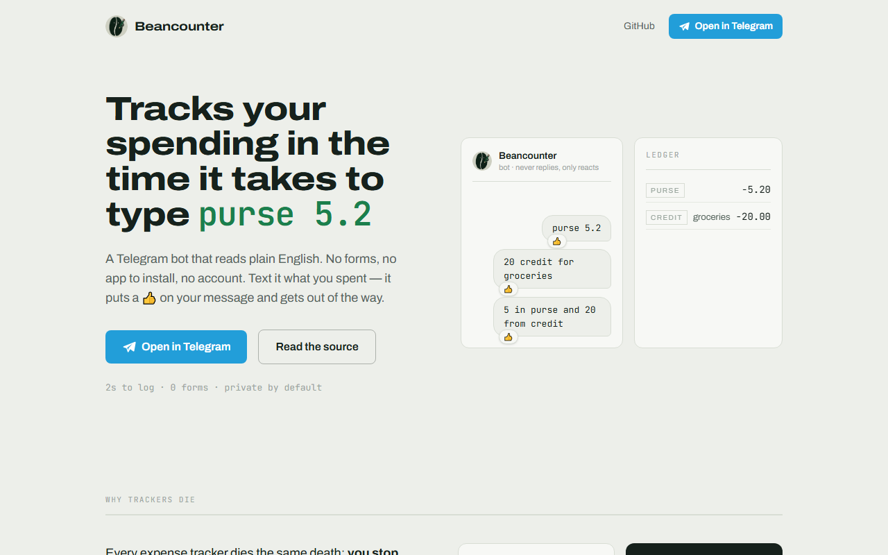

BeanCounter
A Telegram bot that logs an expense in the time it takes to type "purse 5.2". Regex handles about 95% of messages with no API call; ambiguous ones like "5 in purse and 20 from credit" go to Amazon Nova Micro on Bedrock. Wallets answer to any nickname you give them, success is a single 👍 reaction, and the React dashboard signs you in by verifying Telegram's initData signature, so there is no login.